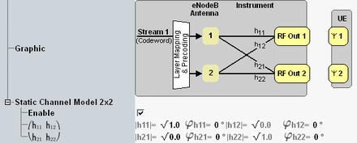

The channel model settings are displayed for transmission mode 2 to 6, if supported by the scenario. They are hidden for fading scenarios and for scenarios with RF output before the radio channel.
The matrix defines the radio channel coefficients, see "Radio Channel Coefficients for MIMO".
Each element of the matrix is a complex number, defined via its phase and its magnitude.

The size of the matrix depends on the number of antennas.
You can configure the phase of each number and the square of the magnitude of h11 and h21. The other magnitudes are adapted automatically.
If the model is disabled, there is no coupling between the signals of the eNodeB antennas. So each UE antenna receives only the signal of one eNodeB antenna.
Remote command:You can configure the phase and the square of the magnitude of all coefficients. The sum of all magnitude squares within each line of the matrix must equal 1.
The sum is checked automatically. A correct sum is indicated by , a wrong sum by , followed by the sum. Configure all values of a line so that the sum equals 1, then press the "Apply" button.
Remote command:Via the following parameters, you can disable the channel model or select a predefined matrix or define your own matrix.
If the channel model is disabled, there is no coupling between the signals of the eNodeB antennas. So each UE antenna receives only the signal of one eNodeB antenna.
The other channel model settings are irrelevant in that case.
Remote command:Selects a predefined matrix or the user-defined matrix.
If you select a predefined matrix, the resulting matrix coefficients are displayed for information.
"User Defined" | You can configure the phase and the square of the magnitude of all coefficients. The sum of all magnitude squares within each line of the matrix must equal 1. The sum is checked automatically. A correct sum is indicated by , a wrong sum by , followed by the sum. Configure all values of a line so that the sum equals 1, then press the "Apply" button of that line. |
"3GPP Channel Matrix" | The square of the magnitude is 0.25 for all coefficients. Phases line by line: (0°, 0°, 90°, 90°) (0°, 0°, 270°, 270°) (0°, 180°, 90°, 270°) (0°, 180°, 270°, 90°) |
"Hadamard Matrix" | The square of the magnitude is 0.25 for all coefficients. Phases line by line: (0°, 0°, 0°, 0°) (0°, 180°, 0°, 180°) (0°, 0°, 180°, 180°) (0°, 180°, 180°, 0°) |
"Identity Matrix" | The square of the magnitude is 1 for the main diagonal and 0 for all other coefficients. The phase is 0° for all coefficients. |